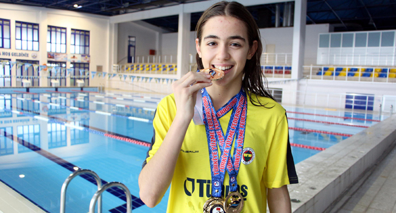
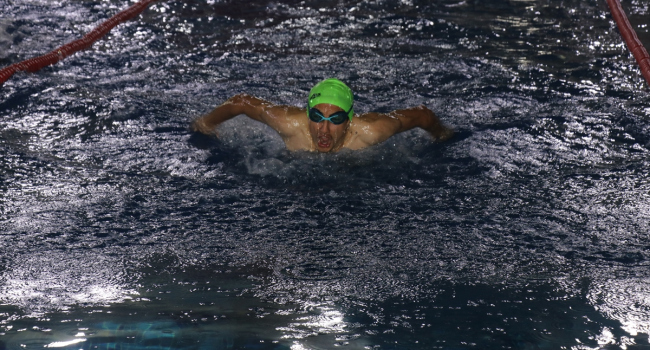
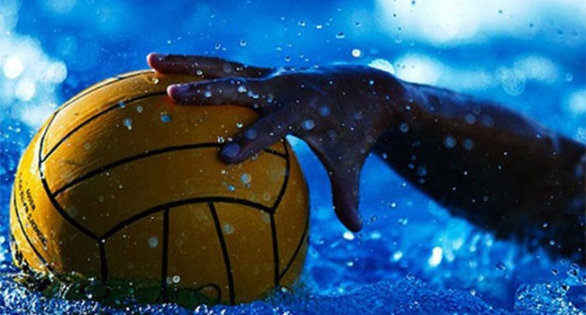

SON GELİŞMELER

Merve Tuncel, Avustralya'da 5. oldu
Avustralya'da düzenlenen Dünya Kısa Kulvar Yüzme Şampiyonası'nın ikinci gününde milli sporcu Merve Tuncel, kadınlar 800 metre serbest stilde 5. sırayı aldı.

Su korkusuyla gelen başarı öyküsü
Edirne'de 6 yaşında su korkusunu yenmek için başladığı yüzmede 200 metre serbest ve 400 metre karışıkta 3. kez Türkiye Şampiyonu olan Fenerbahçe Spor Kulübü'nün sporcusu Beyza Işık'ın (13) hedefi olimpiyatlarda ülkeyi temisl etmek.

Başarıya kulaç atıyorlar
Ağrı'da günün büyük bölümünü geçirdikleri evlerinden çıkıp yüzme sporuna başlayan bedensel engelliler, milli forma hayaliyle antrenman yapıyor.
"Ülkemizi iyi yerlerde temsil etmek istiyoruz"

Sutopunda rakipler belli oldu
Avrupa Yüzme Birliği (LEN) tarafından düzenlenen Sutopu Challenger Kupası'nda Türkiye'yi temsil eden ENKA ile Galatasaray'ın çeyrek finaldeki rakipleri belirlendi.